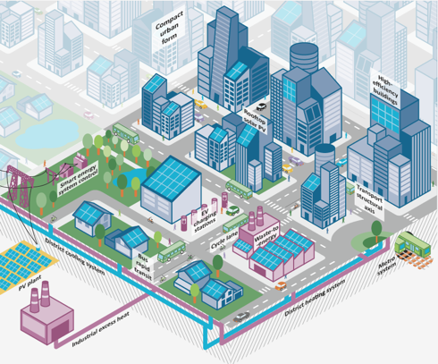

Bestaat de Energieleverancier nog wel in 2030?
Als energieleverancier staan er grote veranderingen op de agenda. Met trends als decentralisatie van energieopwekking en de verschuiving naar hernieuwbare energie, kan het zo zijn dat de markt van de energieleverancier vervalt. Maar wat dan? Dat is onderzocht aan de hand van een scenario-analyse
In deze analyse staan twee drivers centraal: de mate van decentralisatie van energieopwekking en de ontwikkelingssnelheid van energieopslag apparatuur. Beide drivers kennen een hoge mate van onzekerheid, maar zullen grote impact hebben op de toekomst.

Op basis van de scenario analyse blijkt dat voor energieleveranciers de meest radicale verandering ontstaat wanneer energie decentraal wordt opgewekt en al deze opgewekte energie opgeslagen kan worden. Dit scenario noemen wij de “Energie Autarkie”. Dit scenario houdt in dat ieder huishouden, bedrijf en/of gemeente in staat is om zichzelf van energie te voorzien. Hierbij schatten wij hoge kansen in voor duurzame energie-opwekkers; deze zijn immers goedkoper voor aanschaf op kleinere schaal. Wanneer al het opgewekte energie opgeslagen kan worden, zullen er grote slagen gemaakt kunnen worden in de efficiëntie van bijvoorbeeld zon- en windenergie. Daarentegen zet dit scenario grote druk op het bestaansrecht van een energieleverancier als NUON. Door het ontstaan van zogeheten “prosumers” en regionale afhankelijkheid is er geen behoefte meer aan een Europese energiemarkt.
Moonshot heeft twee businessmodellen ontwikkeld waarmee NUON een unieke positie kan innemen in deze geheel nieuwe energiemarkt.
De eerste wordt
‘NU-ONeindig’ genoemd. Bij dit businessmodel wordt ervan uit gegaan dat accu’s kostbare investeringen blijven. Doordat duurzame energie-opwekkers ‘voorspelbaar onvoorspelbaar’ zijn, is er behoefte aan flexibiliteit in de opslagcapaciteit. Deze flexibiliteit zou NU-ONeindig kunnen creëren. NU-ONeindig geeft de mogelijkheid om opslagcapaciteit tijdelijk te huren. Een consument kan dan opslag huren door of een maandelijks bedrag af te staan, of eenmalig een bedrag te betalen. Zo haalt NUON voor efficiënt gebruik van zowel de energie opwekker, als de opslagapparatuur.
Een andere oplossing is ‘ACCUrate-levering’. Hierbij dient NUON als een service die de gemeentes ontzorgt door het stabiliseren van energiebalansen. Door de data te analyseren van alle gemeentes, kan NUON tijdig tekorten of overschotten constateren en door middel van een ingenieus trading systeem. De energie kan geruild worden doormiddel van het verplaatsen van accu’s met vrachtwagens.